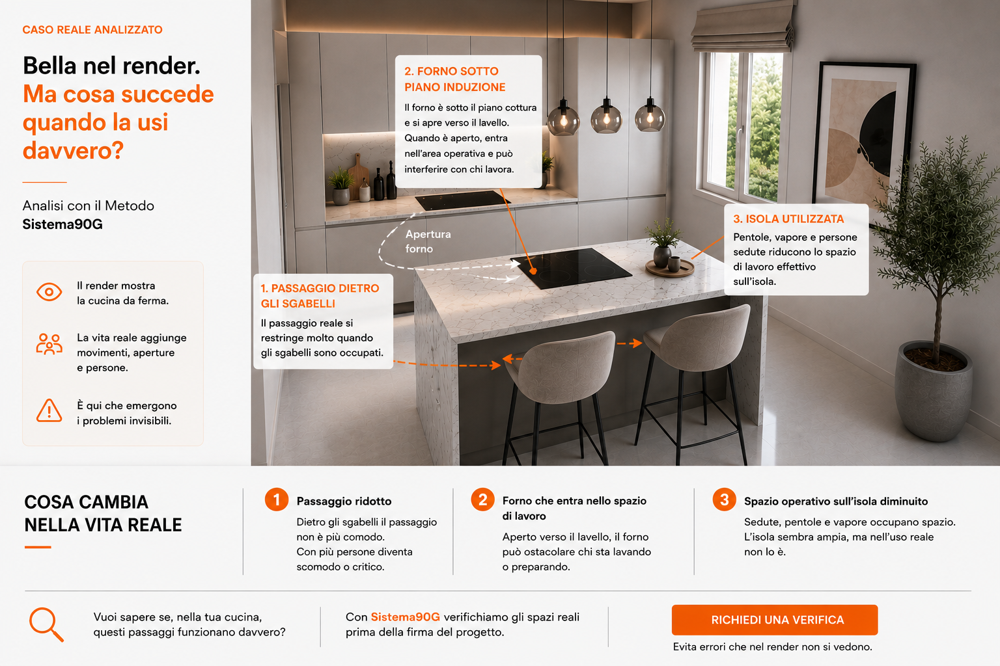

Passaggio dietro gli sgabelli
Con le sedute occupate il passaggio percepito può cambiare molto rispetto alla scena ordinata del render.
Scena reale cucina
Sgabelli occupati, forno aperto, movimenti intorno all'isola e utilizzo quotidiano possono cambiare molto la percezione dello spazio.

Cosa cambia nella vita reale
Con le sedute occupate il passaggio percepito può cambiare molto rispetto alla scena ordinata del render.
Il forno non si vede subito, ma va immaginato aperto verso il lavello e dentro l'area operativa.
Pentole, vapore, oggetti e persone sedute cambiano rapidamente la sensazione di spazio disponibile.
Il punto
Questo tipo di lettura aiuta semplicemente a immaginare meglio movimenti, aperture e utilizzo quotidiano prima della firma.
Uso reale cucina
Invia piantina, render o preventivo. Analizziamo insieme movimenti, aperture e dinamiche reali dello spazio.
Analizza il tuo progetto